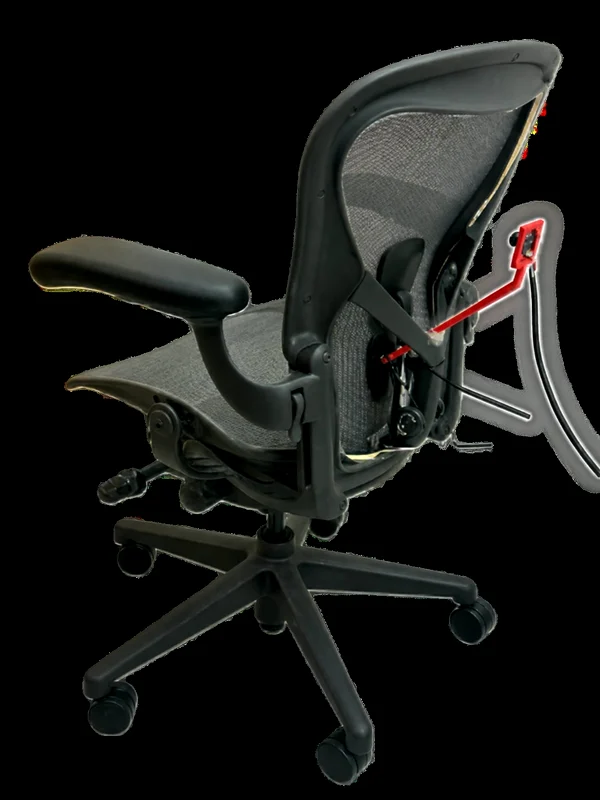
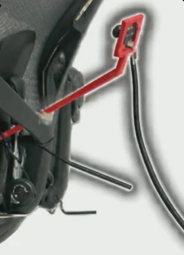

ACM MobiCom 2026 · Demo · Austin, TX
MoiréDeform
Towards fine-grained deformation sensing through everyday moiré
Linzhen Zhu* · Zuchen Li* · Weihao Jin
Hyunmin Park · Alanson Sample · Ke Sun
* Equal contribution · University of Michigan
 Ambient Intelligence LabAMI Lab
Ambient Intelligence LabAMI Lab
The phenomenon
What is a moiré?
Everyday · two fine patterns, slightly different
- Top layer slides
- —
- Bands slide
- —
Ours · one pattern, before and after, subtracted
Before
After a press
After − before
Our insight
Let the weave be the grating.
Camera view · live − reference · simulated
Weave · shifts a little
Fringes · shift further
Real · difference view
Real · difference view · seated user
The system
One clip-on camera. Nothing on you.
Clip-on cameramonochrome
1280 × 800 · 30 FPS
Mesh chairunmodified
It sees only the chair back: the user is never in frame.

Real · prototype
Photos: the paper's Fig. 1

Real · the module
How it works
One frame of the empty chair.
Each live frame looks the same.
Subtract, and the press appears.
Camera view · raw · simulated
Camera view · live − reference · simulated
Violet · the reference: what subtraction removes
The raw live frame: the weave looks almost unchanged
Gold · what moved: the fringes
Coarse · posture
Lean to steer.
Envelope + centroid · simulated
2D cursor · simulated
- Envelope
- Centroid
- − neutral
- 2D cursor
Real · leaning drives the joystick
Fine · breathing
A breath shifts the fringes.
It may barely move the whole-field centroid, so the fringes' subpixel shift is tracked in a central band.
Camera view · live − reference · simulated
Fringe shift · illustration · assumed breathing
- CLAHE
- Amplify
- Phase correlation
- Band-pass
A small 1D CNN turns 15 s windows of the fringe shift into the breathing waveform.
- Fringe shift
- 1D CNN
- Waveform
Real · CNN waveform (green) · chest belt (grey)
When the signal's amplitude before the CNN falls well below the user's calibrated breathing level, the output is suppressed.
- Amplitude
- Gate
- Output suppressed
Real · breath held: the output gated flat
Results
Less rate error than a marker.
0.71 vs 2.07
breaths/min · rate error vs chest belt
Raw moiré vs marker · same camera · 3 sessions
0.72 ± 0.45
breaths/min · vs chest belt
Session-level rate · 5 users · 100 min
0.69
waveform correlation r
Leave-one-session-out
- 01No markers · the chair's own weave
- 02Chair back only · the user is never in frame
- 03Two scales · a lean and a breath
- 040.71 vs 2.07 · breaths/min rate error, raw moiré vs marker
Thank you.
The paper
Ambient Intelligence LabAMI Lab
ACM MobiCom 2026 · Demo · Austin, TX
MoiréDeform
Towards fine-grained deformation sensing through everyday moiré
Linzhen Zhu* · Zuchen Li* · Weihao Jin
Hyunmin Park · Alanson Sample · Ke Sun
* Equal contribution · University of Michigan
Thank you.
The paper
Ambient Intelligence LabAMI Lab